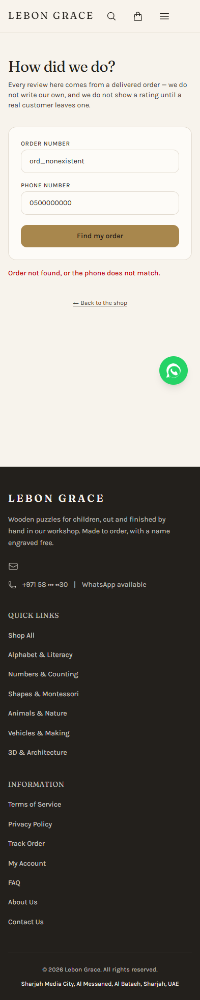

MEDIUM · RV-01 — Eligibility GET scans all order items
GET /api/reviews?order=&phone= uses orderItems.getAll() and filters in memory, unlike the scoped POST query. Use getByOrder(order.id) and pin it with regression coverage.
Delivered-order reviewer. No review, customer data or customer browser state was accessed.
Safe negative desktop/mobile production lookup works and no UI issue was observed. The eligibility GET needlessly scans every order item after the phone/order gate.
English-only, no tiers. One review per purchased piece after delivered/completed status. Reviews publish rating, comment and order name immediately; contact/address are excluded. The 26-test route suite passed.
GET /api/reviews?order=&phone= uses orderItems.getAll() and filters in memory, unlike the scoped POST query. Use getByOrder(order.id) and pin it with regression coverage.
Unit coverage is extensive but no review E2E exists. Add safe seeded/mock flows for eligibility, ownership, duplicate and keyboard stars.

Readable controls, intentional ambiguous refusal, no overlap or horizontal overflow. Evidence script, JSON and screenshots are retained here. Next: Newsletter Subscriber.